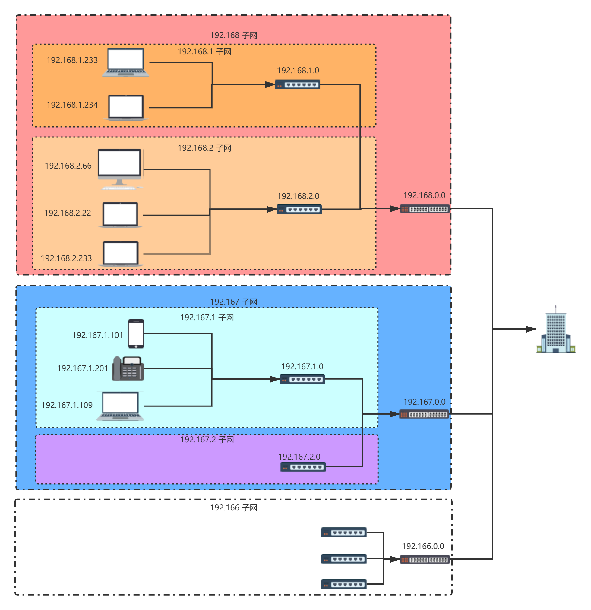
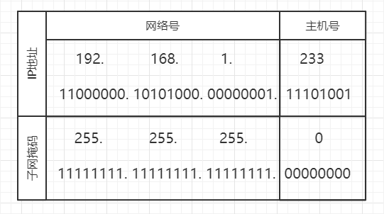

之前说道了协议如何定义, 以及简单解释了它对于互联网传输起到了什么作用; 以及TCP/IP在整个网络连接中的位置和它扮演的角色;
- 前文回顾
- TCP/IP协议怎么做到的
- TCP/IP协议设计的基本思路
- 协议栈内部结构
- 协议栈处理数据发送流程简介
- 什么是socket以及它能做什么
- TCP/IP和数据包
- UDP的特点和数据收发方式
- 小结
前文回顾
TCP/IP协议怎么做到的
TCP/IP协议设计的基本思路
IP地址(IPv4)的设计思想是通过一个32位十进制数字书写的地址来准确描述一台主机在网络中的具体位置, 通过该地址可以完成两台主机之间的通信; 上一篇中网络连接的简图展示了各个设备之间在网络中是如何连接起来的, 为了便于理解, 我们可以假想一栋大楼作为一个独立的子网络单元, 然后各个大楼之间只通过一个出入口进行连接; 基于这个模型, 可以比较形象的解释IP地址的设计思想,如下图:

大楼作为整个网络单元的出入口, 内部分为若干个子网; 每一层设备有自己独立的网段; 例如第一层分为三个子网(192.168.0.0, 192.167.0.0, 192.166.0.0); 即都为 192.16x.xxx 的网段; 这一层的设备对应着路由器, 事实上不需要物理设备也能进行网段的划分; 但为了便于理解, 可以先接纳物理设备划分了网段这个概念; 第二层由集线器划分, 每一个路由器下面连接的集线器这一层为第二个子网,地址为 192.16x.2.xxx ~ 192.16x.254.xxx; 而每个集线器下面连接的设备则为第三个子网,这些设备构成了局域网, 也是整个大楼网络单元的最后一层; 由此可见, IP地址的设计: xxx.xxx.xxx.xxx 每个点分割出了一个网段作为子网地址,理论上每个网段的局域网支持253个子网(设备)可以使用,IP地址中, xxx.xxx.xxx.1 为网关地址, xxx.xxx.xxx.255 为广播地址, 这两个地址不会分配给普通客户端; 完整的IPv4地址总共32位, 即当前的可用地址总共有${2^{32}}$个; IP地址为何如此设计暂无考证, 但如果从查找效率上看,这种树状的设计思路可以有效提高数据包从楼层入口进入网络单元, 最终准确到达客户端的速度;
而子网掩码, 是为了帮助计算机从32位的IP地址中提取出网络地址和主机号的必要信息; 因为仅按照前面的规则定义出一个IP地址, 除了定义者本人以外是无法判断哪部分是网络地址, 哪部分是子网中具体的设备地址的; 子网掩码的设计思路简单而有效, 定义一个同样长度为32为的点分割地址; 网络地址部分为1, 主机地址部分为0; 然后将其与IP地址进行AND操作, 便能分割出网络地址和主机地址了;

协议栈内部结构
协议栈处理数据发送流程简介
什么是socket以及它能做什么
TCP/IP和数据包
UDP的特点和数据收发方式
小结
references：
[1] https://zhuanlan.zhihu.com/p/33889997
[2] https://book.douban.com/subject/26941639/
[3] https://book.douban.com/subject/10510747/